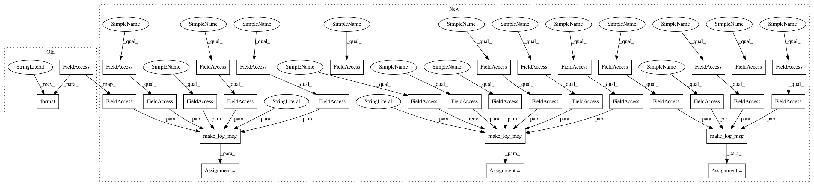

f776b5bd09425a7a15a0bf9e3bea8d995e70281e,modules/Gyoi_SpiderControl.py,SpiderControl,run_spider,#SpiderControl#Any#Any#Any#Any#,44
Before Change
// Running spider.
def run_spider(self, protocol, target_fqdn, target_port, target_path):
self.utility.write_log(20, "[In] Run spider [{}].".format(self.file_name))
// Original log of GyoiThon.
now_time = self.utility.get_current_date("%Y%m%d%H%M%S")
After Change
// Running spider.
def run_spider(self, protocol, target_fqdn, target_port, target_path):
msg = self.utility.make_log_msg(self.utility.log_in,
self.utility.log_dis,
self.file_name,
action=self.action_name,
note="Run spider",
dest=self.utility.target_host)
self.utility.write_log(20, msg)
// Original log of GyoiThon.
now_time = self.utility.get_current_date("%Y%m%d%H%M%S")
gyoithon_log = protocol + "_" + target_fqdn + "_" + target_port + "_crawl_response_" + now_time + ".log"
target_dir_name = target_fqdn + "_" + str(target_port)
base_log_path = os.path.join("logs", target_dir_name)
if os.path.exists(base_log_path) is False:
os.mkdir(base_log_path)
gyoithon_log_path = os.path.join(base_log_path, gyoithon_log)
// Default log of Scrapy (Required: Relative path).
scrapy_log_path = os.path.join(base_log_path, now_time + self.output_filename)
// Assemble command options.
target_url = protocol + "://" + target_fqdn + ":" + target_port + target_path
// Proxy setting.
proxy = ""
if self.utility.proxy != "":
parsed = util.parse_url(self.utility.proxy)
if self.utility.proxy_user != "":
proxy = parsed.scheme + "://" + \
self.utility.proxy_user + ":" + self.utility.proxy_pass + "@" + \
parsed.netloc
else:
proxy = parsed.scheme + "://" + parsed.netloc
// Assemble Scrapy command.
option = " -a target_url=" + target_url + " -a allow_domain=" + target_fqdn + \
" -a concurrent=" + self.spider_concurrent_reqs + " -a depth_limit=" + self.spider_depth_limit + \
" -a delay=" + self.spider_delay_time + " -a store_path=" + gyoithon_log_path + \
" -a proxy_server=" + proxy + " -a user_agent="" + self.utility.ua + """\
" -a encoding=" + self.utility.encoding + " -o " + scrapy_log_path
close_opton = " -s CLOSESPIDER_TIMEOUT=" + self.spider_time_out + \
" -s CLOSESPIDER_ITEMCOUNT=" + self.spider_item_count + \
" -s CLOSESPIDER_PAGECOUNT=" + self.spider_page_count + \
" -s CLOSESPIDER_ERRORCOUNT=" + self.spider_error_count + " "
spider_path = os.path.join(self.full_path, "Gyoi_Spider.py")
command = "scrapy runspider" + close_opton + spider_path + option
msg = "Execute spider : {}.".format(command)
self.utility.print_message(OK, msg)
msg = self.utility.make_log_msg(self.utility.log_mid,
self.utility.log_dis,
self.file_name,
action=self.action_name,
note=msg,
dest=self.utility.target_host)
self.utility.write_log(20, msg)
// Execute Scrapy.
proc = Popen(command, shell=True)
proc.wait()
// Get crawling result.
all_targets_log = []
target_log = [target_url]
non_target_log = []
dict_json = {}
if os.path.exists(scrapy_log_path):
with codecs.open(scrapy_log_path, "r", encoding="utf-8") as fin:
target_text = self.utility.delete_ctrl_char(fin.read())
if target_text != "":
dict_json = json.loads(target_text)
else:
self.utility.print_message(WARNING, "[{}] is empty.".format(scrapy_log_path))
// Exclude except allowed domains.
for idx in range(len(dict_json)):
items = dict_json[idx]["urls"]
for item in items:
try:
if target_fqdn == util.parse_url(item).host:
target_log.append(item)
elif util.parse_url(item).scheme in ["http", "https"]:
non_target_log.append(item)
except Exception as e:
msg = "Excepting allowed domain is failure : {}".format(e)
self.utility.print_message(FAIL, msg)
self.utility.write_log(30, msg)
self.utility.write_log(20, "Get spider result.")
all_targets_log.append([target_url, gyoithon_log_path, list(set(target_log))])
msg = self.utility.make_log_msg(self.utility.log_out,
self.utility.log_dis,
self.file_name,
action=self.action_name,
note="Run spider",
dest=self.utility.target_host)
self.utility.write_log(20, msg)
return all_targets_log, non_target_log
In pattern: SUPERPATTERN
Frequency: 6
Non-data size: 34
Instances
Project Name: gyoisamurai/GyoiThon
Commit Name: f776b5bd09425a7a15a0bf9e3bea8d995e70281e
Time: 2019-05-21
Author: gyoiler3@gmail.com
File Name: modules/Gyoi_SpiderControl.py
Class Name: SpiderControl
Method Name: run_spider
Project Name: gyoisamurai/GyoiThon
Commit Name: f776b5bd09425a7a15a0bf9e3bea8d995e70281e
Time: 2019-05-21
Author: gyoiler3@gmail.com
File Name: modules/Gyoi_VersionCheckerML.py
Class Name: VersionCheckerML
Method Name: identify_product
Project Name: gyoisamurai/GyoiThon
Commit Name: f776b5bd09425a7a15a0bf9e3bea8d995e70281e
Time: 2019-05-21
Author: gyoiler3@gmail.com
File Name: modules/Gyoi_VersionChecker.py
Class Name: VersionChecker
Method Name: identify_product
Project Name: gyoisamurai/GyoiThon
Commit Name: f776b5bd09425a7a15a0bf9e3bea8d995e70281e
Time: 2019-05-21
Author: gyoiler3@gmail.com
File Name: modules/Gyoi_CommentChecker.py
Class Name: CommentChecker
Method Name: get_bad_comment
Project Name: gyoisamurai/GyoiThon
Commit Name: f776b5bd09425a7a15a0bf9e3bea8d995e70281e
Time: 2019-05-21
Author: gyoiler3@gmail.com
File Name: modules/Gyoi_ErrorChecker.py
Class Name: ErrorChecker
Method Name: get_error_message
Project Name: gyoisamurai/GyoiThon
Commit Name: f776b5bd09425a7a15a0bf9e3bea8d995e70281e
Time: 2019-05-21
Author: gyoiler3@gmail.com
File Name: modules/Gyoi_ContentExplorer.py
Class Name: ContentExplorer
Method Name: content_explorer